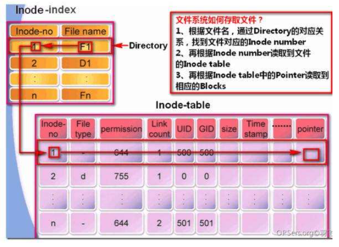

依旧是面试字节实习生时遇到的面试题，当时没答出来，现在来学习一波。
参考链接
简介
Linux 对文件的存储和访问是通过一种被称为 inode 即 i 节点的机制来实现的，它存储着除了文件名和文件内容之外的文件的全部信息，（”An inode stores all the information about a regular file, directory, or other file system object, except its data and name. “）
当我们读写文件时，通常是以流的形式，即认为文件的内容是连续的。但是在磁盘上，一个文件的内容通常是由多个固定大小的数据块即 block 构成的，并且这些数据块通常是不连续的。
这时就需要一个额外的数据结构来保存各数据块的位置、数据块之间的顺序关系、文件大小、文件访问权限、文件的拥有者及修改时间等信息，即文件的元信息，而维护这些元信息的数据结构就被称为 i 结点。因而可以认为 i 节点中含有一个帮助定位文件数据块的 “目录结构”。

i 节点中主要有两大部分:
- 一部分是 i 节点号与文件名的对应表
- 另一部分就是i 节点对应文件的元信息
在 mac 下执行 stat -f "%i" file.txt 查看 inode 的 ID
链接
硬链接：链接到同一个 inode 节点上，增加 inode 的链接计数；硬链接文件和原文件就是同一个文件，只不过有两个名字
软链接：可以对目录建立链接；不会增加 inode 的链接计数
前者就是类似于一个文件名，普通的文件，后者只是一个快捷方式
Why are hard links to directories not allowed in UNIX/Linux?
Allowing hard links to directories would break the directed acyclic graph structure of the filesystem, possibly creating directory loops and dangling directory subtrees, which would make fsck and any other file tree walkers error prone.
Now, if you were allowed to do this for directories, two different directories in different points in the filesystem could point to the same thing. In fact, a subdir could point back to its grandparent, creating a loop.
unlink
rm 的底层调用：
只有在文件的链接数为1，即当前文件名是文件的最后一个链接并且有没有进程打开此文件的时候，unlink() 才会真正删除文件内容。
如果文件链接数为1，但是仍然有进程打开这一文件，那么 unlink 后，虽然在原目录中已经没有了被删除文件的名字，但是实际上系统还是保留了这一文件，直到打开这一文件的所有进程全部关闭此文件后，系统才会真正删除磁盘上的文件内容